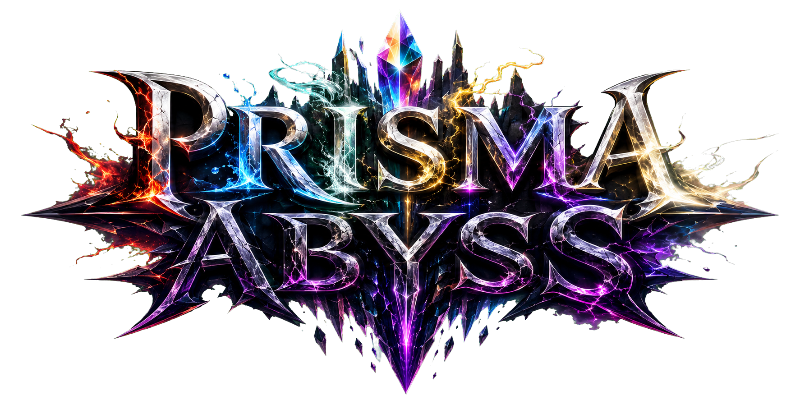
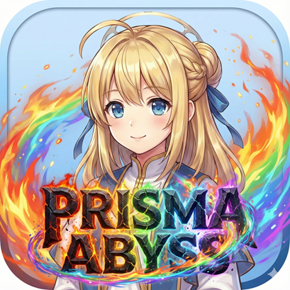
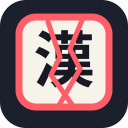

GAME 01  DETAIL FILE → HACK & SLASH RPGPRISMA ABYSS  スマートフォン向けに制作中のハック＆スラッシュRPG。ダンジョン探索、装備収集、仲間編成などをブラウザ上で楽しめます。 開発中無料（一部広告あり）ローカルセーブスマホ対応 PLAY GAME 作品詳細 開発版のため、予告なく仕様変更やセーブデータの互換性変更を行う場合があります。
GAME 02 漢字 deクラッシュキーボード DETAIL FILE → KANJI × KEYBOARD SURVIVAL漢字 de クラッシュキーボード  3つの漢字語から、今のキー状態で打ち切れる読みを選ぶサバイバルタイピング。使ったキーは摩耗・破損し、shi／si のような打ち方で得点と消耗キーも変化します。30秒スコアアタック／5HPの10語完走に加え、同じ問題列でCPU Lv1〜5と競う対戦モードを搭載。 開発中PC推奨10語モードCPU戦 PLAY GAME 作品詳細 物理キーボードでのプレイを推奨しています。開発版のため、語彙・難易度・ルールなどを変更する場合があります。